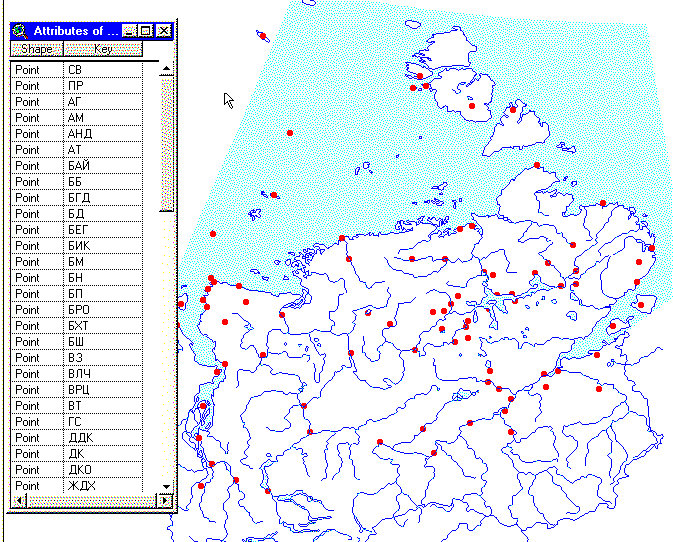
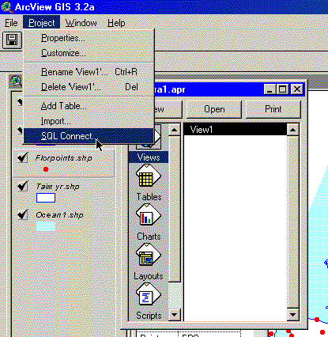
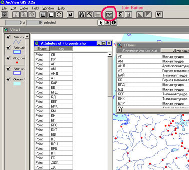
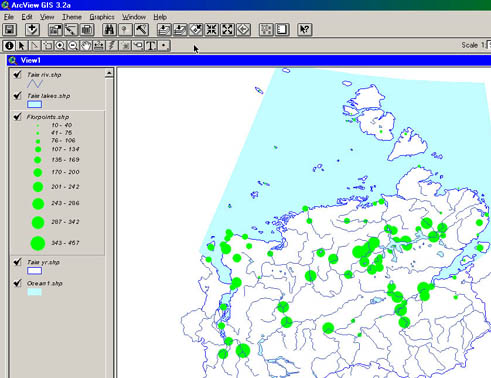
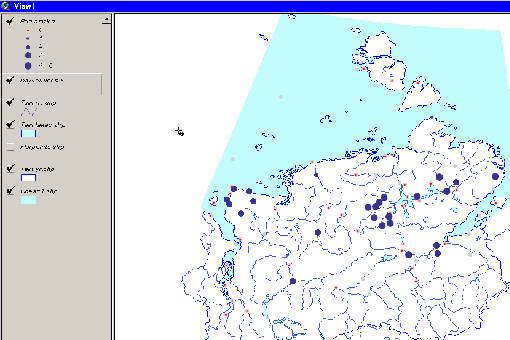

Как установить связь с базой данных MS ACCESS и работать с внешними таблицами, содержащими атрибутивные данные (общее описание процедуры и конкретные примеры)
Этот раздел посвящен совместному использованию взаимодействию ГИС ArcView 3.2a и СУБД MS ACCESS 2000. Приведенные примеры взяты из разрабатываемого сейчас инициативного проекта "Флора Таймыра" (Поспелова Е.Б., Поспелов И.Н. - Таймырский заповедник, Матвеева Н.В., Заноха Л.Л.- БИН РАН)
А. Установка связи с нужной таблицей.
Предположим, что у вас имеется база данных, в которой имеется информация, относящаяся к объектам, изображенным на карте. Вы хотите построить одну или несколько тематических карт, отображающих эту информацию, не вводя соответствующие данные в атрибутивную таблицу темы. Обязательное условие – таблица в базе данных и атрибутивная таблица темы должны иметь поле, содержащее одни и те же данные. В приводимом ниже примере это данные по более чем 80 точкам Таймырского АО, где проводились ботанические исследования и имеются списки сосудистых растений. Атрибутивная таблица темы содержит условные символьные коды участков. В таблице базы данных для каждого участка приводятся различные примеры, такие, как число видов растений, степень изученности участка и т.д.

По опыту, лучше заранее непосредственно в ACCESS создать запрос, содержащий все поля, значения которых нужно отобразить на карте, так как процесс создания запроса в ACCESS весьма прост, а для SQL-связи запрос и таблица равнозначны. В моем случае создан запрос LFMap, содержащий поля кода участка, принадлежности его к определенной растительно-ландшафтной зоне, числа видов сосудистых растений и класса изученности флоры участка. Так как тематика данного ресурса не включает вопросы по работе с ACCESS, то по вопросам создания запросов обращайтесь к соответствующей документации
Для создания связи с базой данных необходимо, чтобы активным было окно Проекта ArcView и выбрать в меню Project – SQL connect…

Появится окно, где вверху в поле Connection необходимо выбрать База данных MS ACCESS, нажать кнопку Connect, после чего будет предложено выбрать конкретную базу данных.
*Примечание – для удобства работы лучше, чтобы база данных была в том же каталоге, что и проект, можно также создать связанную с основной отдельную базу данных в этом каталоге, так как при последующих открытиях проекта будет предлагаться выбрать связанную с проектом базу данных, по умолчанию будет предложен каталог, где находится проект.
После установления связи в левом окошке “Tables” диалога SQL Connect появятся все таблицы и запросы базы данных.
1. Дважды щелкнуть по нужному объекту базы данных. После этого все поля таблицы или запроса появятся в окошке “Columns”, а имя самой таблицы – в предложении “from”.
2. Дважды щелкнуть по каждому из полей, которые нужно включить в SQL-запрос в окошке “Columns”, они появятся в предложении “Select”; можно также щелкнуть на строчке <All Collumns>, тогда в связанной таблице будут выведены все поля исходной таблицы. 3
Ввести вразумительное имя в поле Output table.

4. Об использовании предложения Where – см. ниже.
5. Нажать Query. Связанная таблица появится отдельным окном.
*Примечание: Если у вас в данный момент запущен ACCESS, и связываемый запрос или таблица открыт в ACCESS в режиме конструктора, то вы получите сообщение об ошибке.
6. Закрыть диалог SQL-connect (или провести ту же операцию с другой таблицей).
7. Путем использования меню Window и перетаскивания окон сделать так, чтобы на мониторе были одновременно видны атрибутивная таблица темы, к которой надо привязать данные из связанной таблицы, и сама связанная таблица. Делать атрибутивную таблицу редактируемой необязательно, связанная таблица редактируемой по определению быть не может. Если атрибутивная таблица темы не обнаруживается, значит, после загрузки в проект темы к ней не разу не обращались. Тогда в окне View нужно сделать нужную тему активной и нажать кнопку Open theme table (где нарисована таблица). Появится таблица с именем “Attributes of <название темы>” – это и есть атрибутивная таблица. Поочередно выделить общие поля обеих таблиц – в приводимом примере – поле “Key” атрибутивной таблицы и поле “Ключевые участки: код” связанной.
8. Сделать активным окно атрибутивной таблицы и нажать кнопку Join (если кнопка неактивна, значит вы не выделили в какой-то из таблиц поля связи, или окна связываемых таблиц – атрибутивной и внешней не являются первым и вторым соответственно в иерархии окон). После этого в атрибутивной таблице появятся все поля связанной.
ВНИМАНИЕ! Если активным будет окно связанной таблицы, то результат получится обратный ожидаемому – поля атрибутивной таблицы появятся в внешней связанной, что, как я полагаю, вам не надо.

9. Перейти в окно вида и при помощи двойного щелчка по теме строить легенду по желаемому полю. (я построил легенду типа Graduated Symbol по полю Count - Ключевые участки код – число видов сосудистых растений).

Б. Более сложный случай – несколько одновременно загруженных в Вид тем, основанных на одной связанной таблице.Как видно из предыдущего примера, в полученной в результате связывания таблице имеется 3 поля, по каждому из которых можно построить отдельную тематическую карту. Можно конечно, менять легенду в одной теме с «привязанными» атрибутивными данными, но, как мне представляется, удобнее иметь все эти темы в виде одновременно и просто управлять их отображением. Как это сделать?
Предлагаю следующий алгоритм (алгоритм 2).
- Добавить исходную тему в вид еще раз.
- Вызвать свойства темы (Theme-Properites) и переименовать ее в поле Theme Name, заменив «что-то.shp» на имя, отражающее суть темы. В окне Вида тема приобретет другое имя.
- Нажатием на кнопку Open theme table, тем самым активизировать атрибутивную таблицу темы (обратите внимание – таблица не изменилась, изменилось только имя таблицы, а атрибутивные данные остались теми же, что и у загруженной темы).
- Активизировать связанную таблицу и выполнить шаги 7-9 из выше описанных .
- При необходимости – повторить операцию с той же темой еще под одним именем.
В. Еще более сложный случай – связь с таблицей, где одной записи атрибутивной таблицы темы соответствуют много записей связанной таблицы – использование предложения Where SQL.
В данном разделе речь идет о связывании атрибутивной таблицы темы с таблицей базы данных, содержащей множественные данные, относящиеся к определенному географическому объекту. В приводимом примере имеется выше описанная тема, показывающая расположение участков с обследованными флорами сосудистых растений, атрибутивная таблица которой содержит только условные коды ключевых участков; и таблица в базе данных ACCESS, имеющая поля код вида растений – код ключевого участка – балльная характеристика распространения вида на данном участке. Необходимо для определенного вида построить точечную карту распространения. Для этого нужно выполнить следующие действия.
- Выполнить шаги 1-3 из приведенного в начале алгоритма 1 создания SQL-связи.
- Поместить курсор в поле Where, дважды щелкнуть в окошке Columns по тому полю, по которому нужно провести выборку (в нашем случае поле SpeciesIndex, представляющее из себя числовой код вида растений). В окошке Where появится `Q1`.`SpeciesIndex`, далее ввести = нужный индекс
Пример выражения:
`Q1`.`SpeciesIndex`=420
В русифицированном ArcView синтаксис выражения почему-то меняется, и его нужно ввести вручную. Оно должно выглядеть так:
([Q1.SpeciesIndex])=(420)
Примечание. К сожалению, отбор можно проводить только по числовым полям внешней таблицы. Причины этого мне не вполне ясны, в справочной системе имеется намек, что драйвер ODBS, поставляемый с MS ACCESS, не полностью поддерживает связь с приложениями «made by не-Microsoft», хотя в руководстве пользователя ArcView приводится пример отбора именно по символьному полю (правда, для MS ACCESS 97). Если есть необходимость проводить отбор по символьному полю, то можно создать запрос с нужной выборкой непосредственно в ACCESS и связывать данные с ним.
- Выполнить шаги 5-6 из описанного выше алгоритма 1.
- Добавить проект связываемую тему, переименовать ее, активизировать атрибутивную таблицу, соединить ее со связанной внешней (алгоритм 2).
- Создать легенду темы, исключающую вывод значений, имеющих пустые поля для внешней таблицы.

В приведенном примере легенда построена по полю «Активность», отражающему распространение вида в данной точке, и несколько ее модифицировал. Серыми точками показана исходная тема, показывающая расположение всех участков с обследованными флорами сосудистых растений.
Дата создания: 01.02.2004
Автор(ы): Игорь Поспелов (taimyr)